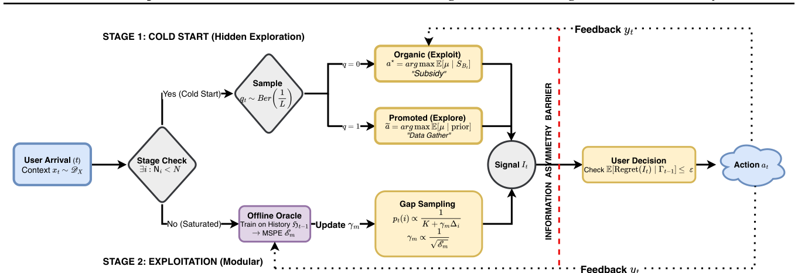

title: "[Paper Note] Incentivized Exploration with Stochastic Covariates: A Two-Stage Mechanism Design for Recommender System" description: "[ICML 2026][强化学习与动态探索推荐] 面向在线随机用户协变量的激励相容探索，提出两阶段 RCB 算法（冷启动补贴 + 逆比例间隙采样），在满足 ε-DBIC 约束下达到 \(\tilde{O}(\sqrt{KdT})\) 遗憾。" tags: - ICML - 强化学习与动态探索推荐 - 召回 - 激励相容探索 - 上下文 Bandit - 机制设计 date: 2026-11-13 venue: ICLR_NeurIPS_ICML year: 2026 paper_url: "https://arxiv.org/abs/2406.04374" code_url: "" categories: - rl_bandit_rec - debias_fairness_industrial
Incentivized Exploration with Stochastic Covariates: A Two-Stage Mechanism Design for Recommender System (随机协变量下的激励探索：推荐系统的两阶段机制设计)
- 会议/期刊: ICML 2026
- 作者与机构: Yuantong Li (Meta Platforms), Guang Cheng, Xiaowu Dai (UCLA 统计与数据科学系)
- 推荐链路定位: 召回（探索式召回 / 冷启动内容分发）
- 研究方向: 强化学习与动态探索推荐 / 去偏公平与机制设计
- 论文原文: https://arxiv.org/abs/2406.04374v2
- 开源代码: 暂未开源
TL;DR (1分钟核心速览)
推荐平台需要探索冷启动商品，但自利用户会拒绝偏离其即时最优的推荐，形成"探索—激励"矛盾。本文首次将激励相容探索（BIC）从固定设计线性 Bandit 推广到在线随机用户协变量场景，形式化为 ε-DBIC 问题，提出两阶段 RCB 算法：第一阶段用"补贴式"隐藏探索收集每臂 \(N(\epsilon)\)个样本，第二阶段用逆比例间隙采样 (IPGS) 配合任意离线学习 oracle。理论上证明\(\tilde{O}(\sqrt{KdT})\)遗憾并量化"激励代价"\(N(\epsilon)\propto 1/\epsilon^2\)；在华法林给药真实数据上，紧预算\(\epsilon=0.025\) 时加权风险分 0.291 显著优于医生基线 0.20。
Background & Motivation (背景与核心矛盾)
- 主流范式: 激励探索由 Kremer et al. (2014)、Mansour et al. (2020) 建立，用"隐藏探索 + 贪心"在 MAB 上实现 BIC；Sellke (2023) 将其扩展到线性上下文，但假设固定设计（特征静态、由商品拥有）。
- 前人局限: (1) 固定设计假设下最优臂全局唯一，无法刻画"每个用户的最优臂随协变量变化"的个性化推荐；(2) 通用黑盒归约（Mansour et al.）忽略线性奖励结构，无法给出 \(\sqrt{T}\) 级遗憾保证。
- 核心洞察 (Key Insight): 平台掌握完整历史而用户只看到推荐与先验，这种信息不对称可被用作"补贴"——用高确定性的饱和臂收益去掩盖探索臂的期望损失，只要损失被控制在激励预算 \(\epsilon\) 内，理性短视用户就会服从。
- 本文切入点: 把激励约束与学习速率解耦：ε 只进入冷启动样本量 \(N(\epsilon)\)，一旦进入第二阶段，探索半径仅由离线 oracle 的预测误差驱动，从而兼得 DBIC 与次线性遗憾。
Method (核心方法设计)
1. 整体框架 (Overall Architecture)
平台每轮观察随机协变量 \(x_t\)，先判断是否所有臂都已"饱和"（各收集\(N(\epsilon)\)样本）。未饱和则进入冷启动阶段：以\(1/L\)概率推荐欠采样臂（探索），以\(1-1/L\)概率推荐饱和臂（补贴），后者不计入样本计数以避免高估置信度。饱和后进入利用阶段：按倍增 epoch 训练任意离线 oracle，用 IPGS 分布采样推荐臂，采样集中度由 spread 参数\(\gamma_m\) 随预测误差收缩而自动收紧。
flowchart TD
A["用户到达, 协变量 x_t"] --> B{"所有臂饱和?"}
B -- 否 --> C["冷启动: 以 1/L 概率探索欠采样臂<br/>以 1-1/L 概率补贴饱和臂"]
C --> D["更新样本计数 N_i, 数据集 S_i"]
B -- 是 --> E["利用: 离线 oracle 估计 μ̂_t"]
E --> F["IPGS 采样: p_t(i) ∝ 1/(K+γ_m·gap)"]
F --> G["推荐 a_t, 观测奖励 y_t"]
2. 关键设计拆解 (Key Designs)
-
ε-DBIC 约束与冷启动补贴机制：痛点在于短视用户会拒绝探索臂。定义 ε-DBIC 为推荐臂 \(i\)相对任意替代臂\(j\)的后验期望损失不超过预算：\(\mathbb{E}[\mu(x_t,i)-\mu(x_t,j)\mid I_t=i,\Gamma_{t-1}]\ge-\epsilon\)。冷启动阶段用概率\(1/L\)的探索混合，使探索损失被饱和臂收益补贴；推导出所需探索概率下界\(L\ge 1+\frac{1-\epsilon}{\tau_{P_0}\rho_{P_0}+\epsilon}\)，其中\(\tau_{P_0}\rho_{P_0}\) 刻画先验-后验间隙的非退化程度。直觉：只要"安全臂"足够好，少量探索的期望损失可被摊薄到预算内。
-
逆比例间隙采样 (IPGS)：痛点在于 Thompson Sampling 依赖特定后验形式（高斯/Beta），无法插入任意离线学习器。RCB 改为对预测最优臂 \(\hat{b}_t\) 与其余臂按间隙反比分配概率： $\(p_t(i)=\frac{1}{K+\gamma_m(\hat{\mu}_t(x_t,\hat{b}_t)-\hat{\mu}_t(x_t,i))},\quad i\ne\hat{b}_t\)$ 其中 \(\gamma_m=4\sqrt{K/E_{\mathcal{F},\delta}(|T_{m-1}|)}\)与离线 oracle 的均方预测误差 (MSPE) 成反比。直觉：预测越准，\(\gamma_m\) 越大，采样越集中于最优臂，探索损失自动收缩到 ε 以内——这正是激励与学习解耦的数学来源。
-
训练目标、样本复杂度与推理开销：总遗憾分解为 \(\mathcal{R}(T)\le T_{\text{cold}}(\epsilon)+\tilde{O}(\sqrt{Kd(T-T_{\text{cold}})})\)，第一项是"激励代价"，第二项是标准上下文 Bandit 学习遗憾。冷启动每臂样本量\(N(\epsilon)\ge\frac{(\sigma^2d+1)K^3}{\phi_0(\tau_{P^*}+\epsilon)^2}\)，对臂数呈三次方、对维度线性、对激励预算平方反比。推理侧每轮仅需一次 oracle 前向 +\(O(K)\) 概率归一化，冷启动阶段仅需先验均值排序，开销可忽略。
Experimental Setup & Evaluation Protocol (实验设置与评估协议)
- 数据集与预处理: 采用 PharmGKB 华法林给药数据集（5,528 名患者），按临床阈值将剂量离散为 3 臂（Low <3mg 占 27%、Medium 3–7mg 占 60%、High >7mg 占 13%），奖励为"推荐剂量是否命中真实最优臂"的二值指示。
| 数据集 | #Users | #Items(Arms) | #Interactions | 稀疏度/密度 | 特征/场景说明 |
|---|---|---|---|---|---|
| PharmGKB (warfarin) | 5,528 | 3 | 5,528 | 全量单轮 | 临床/基因协变量，剂量分桶 |
- 数据划分与防穿越 (Splitting Strategy): 在线流式模拟，患者到达顺序做 10 次随机置换取平均，\(T=5528\)，无训练/测试切分（在线决策范式）。
- 排名评测协议 (Ranking Protocol): 非传统 Top-N 排序，采用累积遗憾（错误给药次数）、ε-DBIC 增益（推荐臂与最优替代臂的期望奖励差）、错误决策比例、加权风险分（按剂量类别患病率加权，正确 +1 错误 −1）四项指标。
- 对比基线与超参设置: 基线为"医生固定 Medium 剂量"标准疗法与 Lasso Bandit (Bastani & Bayati, 2020)；激励预算 \(\epsilon\in\{0.025,0.035,0.045\}\)，先验方差\(\Sigma\in\{0.4,0.6,0.8\}I_d\)，最小间隙\(\tau_{P_0}=0.005\)，噪声\(\hat\sigma=0.054\)。
Key Experimental Results (实验关键数据)
1. 主实验对比 (Main Results)
按真实剂量分层的纠正率与加权风险分（RCB 取 \(\epsilon=0.025\)）：
| 方法 | Low 纠正率 | Medium 纠正率 | High 纠正率 | 加权风险分 ↑ |
|---|---|---|---|---|
| Physician (Always Medium) | 0% | 100% | 0% | 0.200 |
| Lasso Bandit (错误率基线) | — | — | — | ~0.35 错误率 |
| RCB (\(\epsilon=0.025\)) | 50% | 84% | 5% | 0.291 |
| RCB (\(\epsilon=0.035\)) | — | — | — | 0.265 |
2. 消融实验 (Ablation Study)
原文以激励预算与先验强度作为敏感性分析维度（非模块消融）：
| 配置 | 错误决策比例 | 加权风险分 | 说明 |
|---|---|---|---|
| RCB, \(\epsilon=0.025\) | ~0.35 | 0.291 | 紧预算最优，追平 Lasso Bandit |
| RCB, \(\epsilon=0.035\) | 中等 | 0.265 | 先验变弱时略降 |
| RCB, \(\epsilon=0.045\) | >0.40 | 更低 | 松预算探索过度 |
| 先验方差 \(\Sigma=0.4/0.6/0.8\) | 随\(\Sigma\) 增大而升 | — | 先验越弱越难激励 |
3. 关键实验发现 (Key Findings)
- 紧预算反而更优：\(\epsilon=0.025\) 时错误率约 0.35，追平无需 DBIC 约束的 Lasso Bandit，说明严格激励约束并未牺牲决策质量，反而抑制了过度探索。
- 尾部人群显著受益：医生基线在 Low/High 尾部纠正率为 0，RCB 分别提升至 50% 与 5%，同时将"极端错误"（如给 Low 患者开 High）压到 2%，加权风险分从 0.20 升至 0.291（+45.5%）。
- 激励代价可量化：\(N(\epsilon)\propto 1/\epsilon^2\) 的理论预测在实验中体现为——预算从 0.025 放宽到 0.045，冷启动缩短但错误率突破 0.40，验证了"预算—遗憾"的精确权衡曲线。
Highlights & Limitations (亮点、对比与审稿批判)
- 与代表作对比 (vs. Prior Work): 相比 Sellke (2023) 的固定设计线性 Bandit，本文处理在线随机协变量使最优臂逐轮变化；相比 Mansour et al. (2020) 的黑盒归约，本文利用线性结构给出 \(\sqrt{T}\) 遗憾；相比 Thompson Sampling 类方法，IPGS 是模块化的，可插入任意离线回归器（含神经网络）。
- 可迁移亮点: (1) "激励约束只进入初始化阈值、不进入学习速率"的解耦思想，可直接迁移到冷启动商品扶持与创作者激励分配；(2) 用饱和臂收益"补贴"探索损失的混合概率设计，是工业界 ε-greedy 探索的严格化版本。
- 审稿级局限批判: (1) 冷启动样本复杂度对臂数呈 \(O(K^3)\)，\(K\)上千时不可行，文中仅给出聚类/渐进探索等工程缓解而未理论分析；(2) 实验仅限\(K=3\) 的华法林单数据集，缺乏大规模合成仿真与多臂场景验证，且线性奖励假设在真实推荐中易失配。
Rating (四维评分)
- 方法创新性 (Novelty): ⭐⭐⭐⭐ （首次将 BIC 探索推广到随机协变量，IPGS 解耦激励与学习，理论刻画"激励代价"）
- 评估协议与实验扎实度 (Protocol & Experiments): ⭐⭐⭐ （真实临床数据有说服力，但仅单数据集、\(K=3\)，缺大规模仿真与显著性检验）
- 写作与数学规范度 (Clarity & Rigor): ⭐⭐⭐⭐ （DBIC 定义清晰、定理证明完整，附录含完整遗憾分解与 Ridge 预测误差界）
- 工业落地与复现价值 (Industrial & Practical Value): ⭐⭐⭐ （模块化设计易接入现有 oracle，但 \(K^3\) 复杂度与未开源限制大规模部署）